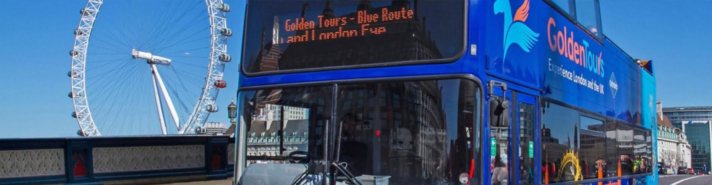

Tours
Don’t know what to see and watch? Follow our tour picks to experience the city to it’s fullest.
Take a Tegucigalpa tour and learn about the capital and its surroundings.
Tegucigalpa is an interesting place to learn about the history of the vibrant Central American country of Houdras.
Its colonial centre, museums and galleries paint a vivid picture of the city's past and present.
| Locations |
Duration |
Price |
Link |
| Half-Day Tour to Valle de Angeles from Tegucigalpa, Honduras |
4 hours |
£23+ |
Link |
| Tegucigalpa City Tour |
3 hours 30 minutes |
£9+ |
Link |
| Day Tour Tegucigalpa and Valle de Angeles |
6 to 12 hours |
£135+ |
Link |
| Day Trip to La Tigra and El Picacho Park |
6 hours |
£54+ |
Link |
| Tegucigalpa & La Tigra National Park Tour |
10 hours |
£223 |
Link |
| Tegucigalpa Half Day Tour |
6 hours |
£137+ |
Link |
| Tegucigalpa Historical Center Private Guided Tour |
8 hours |
£125+ |
Link |
| Tegucigalpa Day Tour |
8 hours |
£221+ |
Link |